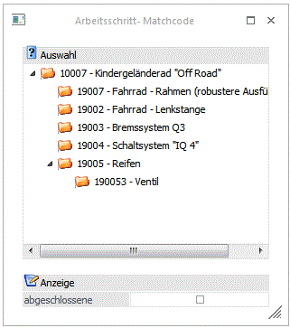
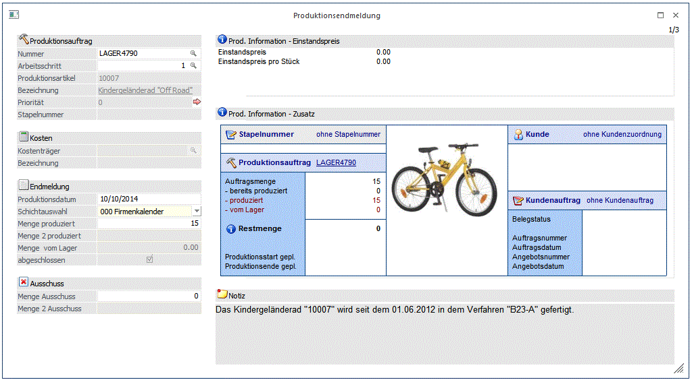
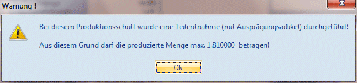
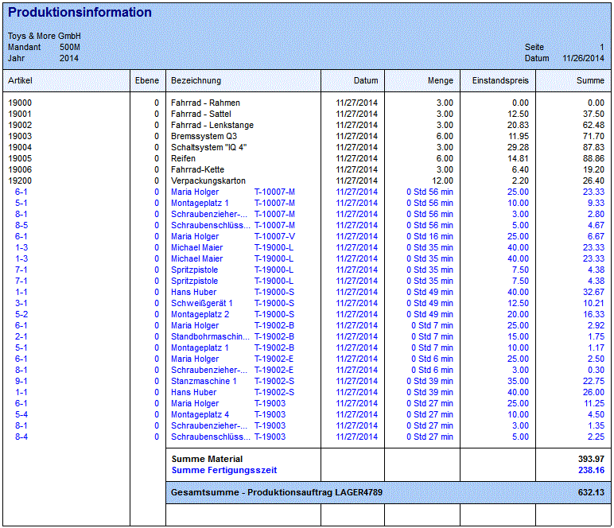

Im ersten Schritt wird das Projekt ausgewählt, das zur Endmeldung verwendet werden soll. Dabei können folgende Felder bearbeitet werden:
Ø Produktionsauftrag - Nummer
Zunächst ist das Projekt auszuwählen, dessen Fertigstellung gemeldet werden soll.
Ø Arbeitsschritt
Danach ist die Ebene zu wählen.
Grundsätzlich kann ein Projekt in Teilschritten gemeldet werden, oder es wird die Fertigstellung aller Ebenen gleichzeitig gemeldet.
Bei der Meldung in Teilschritten wird zunächst die Fertigstellung der untersten Ebene gemeldet, dann die Fertigstellung der nächst höheren usw.
Wird ein Projekt durchproduziert, meldet man die höchste Ebene (1), alle darunter liegenden Ebenen werden automatisch mit gemeldet.
Die Ebene (=Teilschritt) die gemeldet werden soll, kann im Arbeitsschrittmatchcode ausgewählt werden.
Arbeitsschritt- Matchcode

Nach der Wahl des Arbeitsschrittes kann die Fertigungsmeldung für einen Teil oder das gesamte Projekt durchgeführt werden.
Achtung
Wurde in den PPS-Parametern eingestellt, dass ein Arbeitsschein oder ein Materialentnahmeschein gedruckt werden muss, so kann die Endmeldung erst nach Druck dieser Auswertungen erfolgen (es erfolgt ein entsprechender Hinweis am Bildschirm).
Achtung
Es ist nicht möglich, bei einem Arbeitsschritt eine End- oder Teilendmeldung durchzuführen, wenn ein darunterliegender Produktionsartikel fremdgefertigt wird, der noch nicht den Status „abgeschlossen" erreicht hat. Insofern hat die Endmeldung eines Sub-Arbeitsschrittes direkt auf übergeordnete Arbeitsschritte Auswirkung.
Darunter werden die Informationen
Ø Produktionsartikel
und
Ø Bezeichnung
angezeigt. Durch einen Klick auf die Bezeichnung kann eine Drill-Down-Funktion ausgelöst werden. Welche Aktion dabei ausgelöst wird, kann über die rechte Maustaste festgelegt werden (die letzte Einstellung wird gespeichert), wobei folgende Optionen zur Verfügung stehen:
ü Aufruf Info
Es wird der Artikel
in der Artikelinfo im Programm WinLine INFO geöffnet.
ü Artikelstamm
Der Artikel wird
in der WinLine FAKT im Artikelstamm geöffnet.
ü Statistik
Es wird die
Artikelstatistik in der WinLine FAKT geöffnet.
ü Artikelbedarfsvorschau
Es wird
die Artikelbedarfsvorschau des Produktionsartikels angezeigt.
Ø Priorität
In diesem Feld wird die Priorität des Produtkionsauftrages angzeigt. Durch einen Klick auf den -Button wird das Fenster Arbeitsschrittstatus geöffnet, wo zusätzliche Informationen zum Produktionsauftrag ersichtlich sind.

Folgende Eingaben sind möglich:
Ø Kostenträger
Wurde in den PPS-Parametern eingestellt, dass eine Übergabe in die Kostenrechnung erfolgen soll, so steht das Feld Kostenträger unter dem Feld Projektnummer zur Verfügung. Hier wird der Kostenträger, der für dieses Projekt verwendet werden soll eingetragen. Wurde bereits im Artikelstamm des Endproduktes ein Kostenträger eingetragen, so wird dieser hier vorgeschlagen. Wird ein Kostenträger eingetragen, wird darunter die Bezeichnung angezeigt.
Endmeldung
Ø Produktionsdatum
Hier kann das Datum eingegeben werden, mit dem die Buchungen im Artikeljournal durchgeführt werden sollen. Standardmäßig wird immer das Auswertedatum der WinLine vorgeschlagen.
Ø Schichtauswahl
Aus der Auswahllistbox kann eine Schicht gewählt werden, für die die Endmeldung durchgeführt werden soll. Bei der Auswahl von 00 - Firmenkalender werden alle Ressourcen/Tätigkeiten berücksichtigt und auch die gesamte Menge vorgeschlagen. Wählt man eine spezielle Schicht aus, wird sofort errechnet, wie viele Stück in dieser Schicht produziert werden hätten sollen. Diese Menge wird auch gleich vorgeschlagen. Zusätzlich werden im letzten Schritt der Produktionsendmeldung (bei der Ressourcenanzeige) nur noch jene Zeilen angezeigt, die von der gewählten Schicht am gewünschten Tag gültig sind.
Ø Menge produziert
Eingabe der Menge, die nun gemeldet werden soll. Es wird vom Programm vorgeschlagen, "Menge Auftrag" - "Menge von Lager" - "Menge produziert" vorgeschlagen.
Die Menge kann vom Bearbeiter
ü erhöht (Überproduktion) oder
ü reduziert (Unterproduktion, Teilproduktion)
werden.
Wurde eine Materialteilentnahme durchgeführt, dann wird diese Menge bei der Endmeldung vorgeschlagen. Dazu muss folgendes in den Applikationsparametern eingestellt werden:
Die Lagerabbuchung erfolgt beim Materialentnahmeschein
und die Einstellung "Der Mat.Entnahmeschein sollte gedruckt werden"
Hinweis
Falls Stücklistenteile mit Ausprägungen im voraus teilentnommen wurden, z.B. einige Chargen wurden teilentnommen, wird eine entsprechende Teilmenge des Arbeitsschrittes zum produzieren vorgeschlagen. Diese Menge kann auch nicht erhöht werden anderfalls erscheint die folgende Meldung:

Ø Menge 2 produziert
Wenn der Produktionsartikel in 2 Mengen geführt wird, dann kann hier auch die Menge 2 eingegeben werden.
Ø Menge vom Lager
Hier kann die Menge eingegeben werden, die vom Lager (also nicht produziert) wurden. Diese Menge kann allerdings nur bei einer unteren Ebene (mehrstufige Produktionsstückliste) eingegeben werden.
Ø abgeschlossen
Durch Aktivierung dieser Checkbox wird das Projekt als abgeschlossen definiert, unabhängig davon ob das Projekt bereits zu Ende produziert wurde (Differenz = 0) oder ob noch Teilmengen offen sind. Die Restmenge wird ausgebucht und die Reservierung der Ressourcen werden gelöscht. Demendsprechend wird auch eine Meldung angezeigt.
Hinweis
Beim Erreichen einer Restmenge=0 wird diese Option icht automatisch aktiviert, wenn Optionen "Lagerabbuchung beim Materialentnahmeschein" auf Selektion "1 durchführen" eingestellt ist und auch Option "Hilfsartikel ebenfalls abbuchen" aktiviert ist.
Ausschuss
Ø Menge Ausschuss / Menge 2 Aussschuss
Hier kann in Bezug auf den Fertigartikel die Menge "Schlechtstück" oder Aussschuss eingegeben werden. Daraus werden im nächsten Schritt der Endmeldung (Material) die anteilsmäßige Ausschuss-Mengen für die Komponenten errechnet und vorgeschlagen. Die Vorgangsweise bei der Behandlung der Ausschussmenge bleibt wie bei Vorgabe der Aussschuss-Mengen in der Stücklistendefinition. Dabei wird die gesamte Produktionsmenge bei gleichzeitig um den um die Ausschussmenge erhöhten Komponentenverbrauch endgemeldet.
Ø Info Button
Es wird eine Aufstellung der Komponenten, ihrer Einstandspreise und der Summe des Einstandspreises für das Fertigprodukt angezeigt.

Informationsteil
Auf der rechten Seite werden einige Informationen zum Produktionsauftrag angezeigt:
Ø Prod. Information - Einstandspreis
In diesem Bereich wird der Einstandspreis des Projektes und der Einstandspreis pro Stück angezeigt.
Ø Prod. Information - Zusatz
In diesem Bereich werden noch einige zusätzliche Informationen zum Auftrag angezeigt:
Ø Stapelnummer
Die beim Produktionsauftrag hinterlegte Stapelnummer wird in diesem Bereich angezeigt. Mit einem Doppelklick auf die Stapelnummer wird die Produktionsliste mit den folgenden Vorbelegungen aufgerufen:
ü Stapelnummer (von/bis)
ü Ausgabe: Option "1 - inkl erledigter Produktionsaufträge"
ü Sortierung: Option "4 Stapelnummer"
ü Checkbox "Auswahl aktivieren" ist aktiviert
Ø Kunde / Auftrag
Sofern der Produktionsauftrag aus der WinLine FAKT übernommen wurde bzw. beim Auftrag ein Kunde / Beleg hinterlegt wurde, werden diese Infos hier angezeigt. Durch einen Klick auf die Kundennummer bzw. auf die Laufnummer des Beleges kann ein Drill-Down durchgeführt werden. Über die rechte Maustaste kann gesteuert werden, welche Funktion dabei aufgerufen wird, wobei beim Konto folgende Varianten zur Verfügung stehen:
ü Aufruf Info
Es wird das
Personenkonto in der Konteninfo im Programm WinLine INFO geöffnet.
ü Personenkontenstamm
Das
Konto wird in der WinLine FIBU im Personenkontenstamm geöffnet.
ü Statistik
Es wird die
Kundenstatistik in der WinLine FAKT geöffnet.
ü Kontoblatt
Es wird das
Kontoblatt in der WinLine FIBU geöffnet.
ü OP-Blatt
Es wird das OP-Blatt
in der WinLine FIBU geöffnet.
Ø Auftragsmenge
Anzeige, wie viel Stück in diesem Projekt produziert werden sollen.
Ø bereits produziert
Haben bereits Teilproduktionen für das aktuelle Projekt stattgefunden, werden diese Mengen hier angezeigt.
Ø produziert
Hier wird die Menge angezeigt, die mit dem aktuellen Produktionslauf gefertigt wird.
Ø vom Lager
Anzeige wie viele Stück vom Lager genommen werden. Eventuell schon vorhandene Fertigprodukte werden nur dann vom Lager abgebucht, wenn die entsprechende Option in der Stückliste aktiviert ist.
Das Programm schlägt vor, die vorhandene Menge, maximal die Menge des Projektes (Auftrages) vom Lager zu nehmen. Diese Menge kann hier reduziert werden.
Ø Restmenge
Hier wird angezeigt, was vom Auftrag nach der Produktionsmeldung noch offen ist. Mit einem Klick auf das blaue Info-Ikon neben der Bezeichnung wird die Auswertung "Buchungsliste" mit Einschränkung auf den Produktionsauftrag bzw. den Produktionsartikel ausgegeben.
Durch Anklicken des VOR-Buttons ( ) gelangt man in den nächsten Schritt, wo
die Komponenten eingegeben werden können.
) gelangt man in den nächsten Schritt, wo
die Komponenten eingegeben werden können.